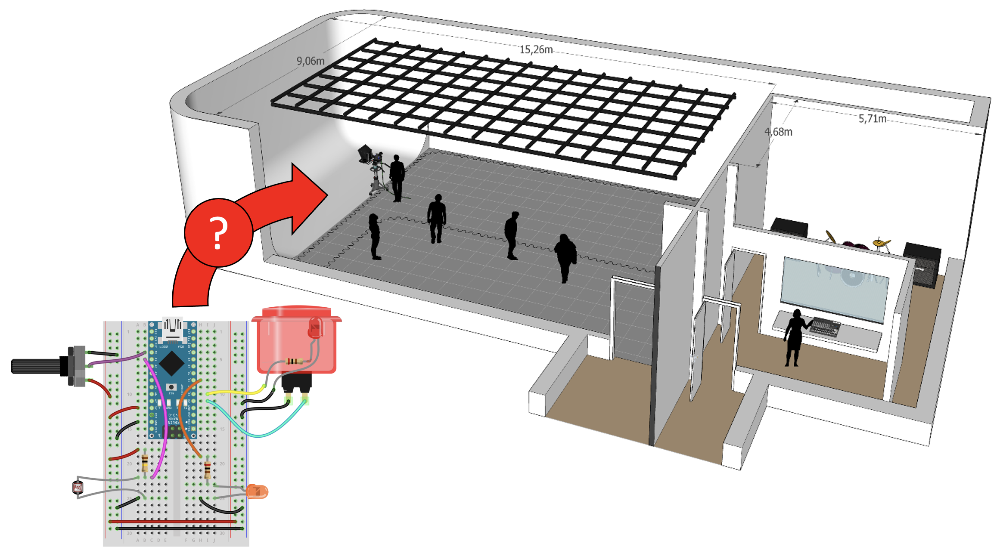
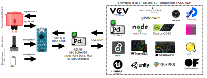
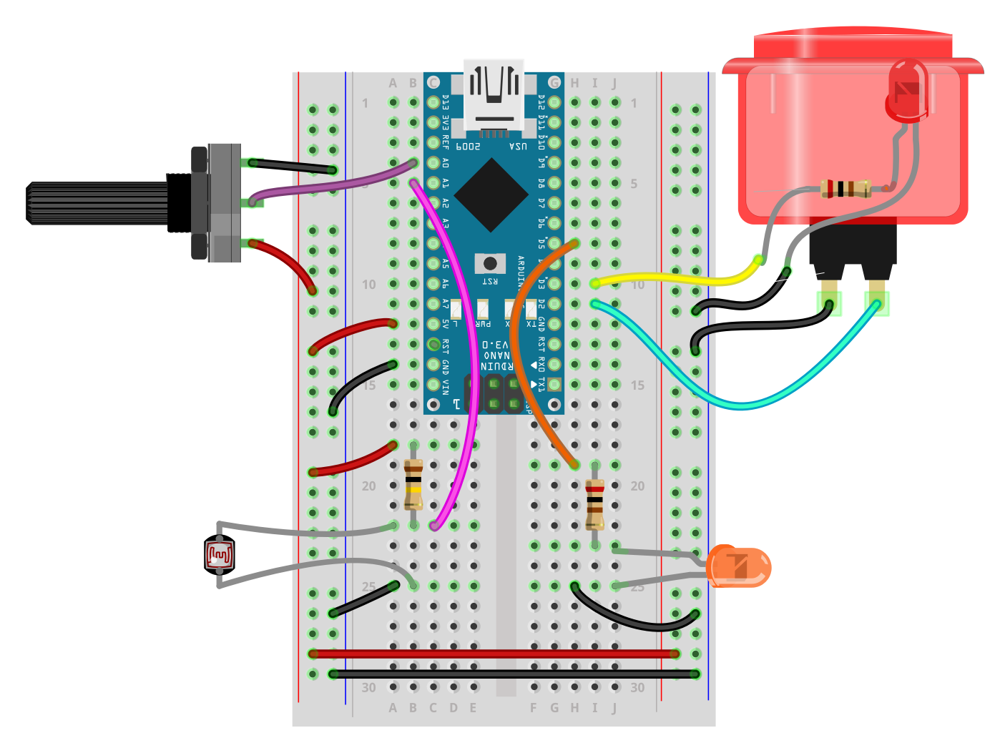
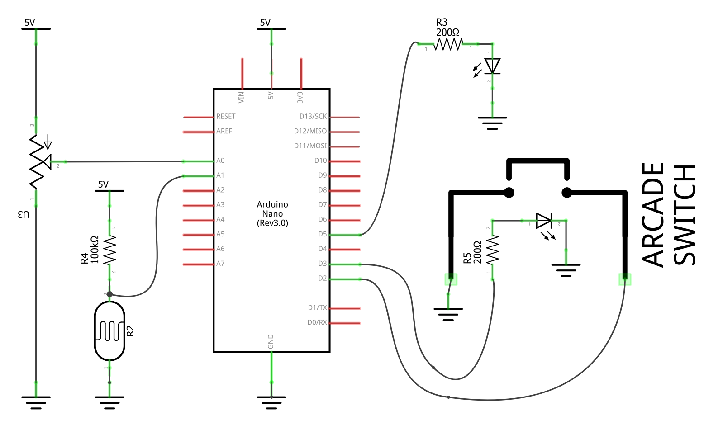

Objectif final
Description de l'objectif final
Toute la matière de cette REL a été choisie et ordonnée pour diriger l'apprenant dans la réalisation d'un objectif final. Cet objectif est présenté ici, tout au début, pour donner un sens, une direction et une présentation de l'étendue des savoirs contenus dans cette ressource.

Cette REL propose une solution pour l'intégration de l'électronique aux espaces immersifs dans un contexte de création multimédia. C'est-à-dire l’intégration de capteurs et actionneurs dans un grand espace où l'ordinateur multimédia, qui doit coordonner les aspects audiovisuels (les projections visuelles, les éclairages, les effets et les diffusions sonores), est distant.
La solution proposée essaie de rester peu onéreuse et accessible tout en demeurant fiable (en éliminant les sources d’erreurs potentielles des communications) et très compatible avec les outils de création multimédia.
À cette fin, l’environnement de développement choisi est Arduino IDE, le modèle de carte l’Arduino Nano et le protocole de communication l’Open Sound Control (OSC).
À noter que cette documentation est entièrement compatible avec des cartes qui communiquent par Wi-Fi ou par Ethernet comme les cartes équipées d'ESP32. Les cartes Arduino ESP32 sont en effet à privilégier à long terme, mais elles sont plus difficiles à maitriser. Leur utilisation sera intégrée à cette ressource ultérieurement.
Connectique OSC de l'objectif final
Le schéma suivant présente le système de connexion et de communication choisi : 
Circuit électronique de l'objectif final
Illustration du circuit électronique
L'illustration suivante présente le circuit que les étudiants devront réaliser pour l'intégration aux espaces immersifs : 
Schéma du circuit éléctronique
De façon générale, les schémas de circuit seront privilégiés. Le schéma suivant représente le même circuit que l'illustration ci-haut : 
Code Arduino de l'objectif final
Pour assurer la connexion avec l’espace immersif, voici le code qui sera exécuté sur l’Arduino :
// MicroOsc_Demo_SLIP
// by Thomas O Fredericks
// 2023-02-20
// WHAT IS DOES
// ======================
// OSC communication example.
//
// OSC messages received by the Arduino :
// - /led int -> turn off (0) or on (1) a LED
// - /pwm int -> set the pwm (0-255) of the arcade button LED
//
// OSC messages sent by the Arduino :
// - /pot int -> sends the value of a potentiometer
// - /photo int -> sends the value of a photocell
// - /button int -> sends the value of a button
// HARDWARE REQUIREMENTS
// ==================
// - POTENTIOMETER connected to analog pin A0
// - POTOCELL (with voltage resistor) connected to analog pin A1
// - Illuminated arcade BUTTON with it's switch connected to pin 2
// and it's LED connected to pin 3 (will be PWM modulated)
// - LED (and matching resistor) connected to pin 5 (will be turned off or on)
// REQUIRED LIBRARIES
// ==================
// - MicroOsc
// REQUIRED CONFIGURATION
// ======================
// - Set the baud of your computer's serial connection to 115200
#include <MicroOscSlip.h>
// THE NUMBER 64 BETWEEN THE < > SYMBOLS BELOW IS THE MAXIMUM NUMBER OF BYTES RESERVED FOR INCOMMING MESSAGES.
// MAKE SURE THIS NUMBER OF BYTES CAN HOLD THE SIZE OF THE MESSAGE YOUR ARE RECEIVING IN ARDUINO.
// OUTGOING MESSAGES ARE WRITTEN DIRECTLY TO THE OUTPUT AND DO NOT NEED ANY RESERVED BYTES.
MicroOscSlip<64> myMicroOsc(&Serial); // CREATE AN INSTANCE OF MicroOsc FOR SLIP MESSAGES
unsigned long myChronoStart = 0; // VARIABLE USED TO LIMIT THE SPEED OF THE loop() FUNCTION.
// POTENTIOMETER
int myPotPin = A0;
int myPotStoredValue = 0;
// PHOTOCELL
int myPhotoPin = A1;
int myPhotoStoredValue = 0;
// BUTTON
int myButtonPin = 2;
int myButtonSotredValue = 0;
// BUTON LED
int myButtonLedPin = 3; // PIN MUST SUPPORT PWM
// LED
int myLedPin = 5;
/********
SETUP
*********/
void setup() {
Serial.begin(115200); // START SERIAL COMMUNICATION
pinMode(myPotPin, INPUT); // POTENTIOMETER: ANALOG INPUT
pinMode(myPhotoPin, INPUT); // PHOTOCELL: ANALOG INPUT
pinMode(myButtonPin, INPUT_PULLUP); // BUTTON: DIGITAL INPUT
pinMode(myButtonLedPin, OUTPUT); // LED: DIGITAL OUTPUT
pinMode(myLedPin, OUTPUT); // LED: DIGITAL OUTPUT
}
/****************
ON OSC MESSAGE
*****************/
void myOnOscMessageReceived(MicroOscMessage& oscMessage) {
if (oscMessage.checkOscAddress("/led")) { // IF THE ADDRESS IS /led
int newValue = oscMessage.nextAsInt(); // GET NEW VALUE AS INT
digitalWrite(myLedPin, newValue); // SET LED OUTPUT TO VALUE (DIGITAL: OFF/ON)
} else if (oscMessage.checkOscAddress("/buttonLed")) { // IF THE ADDRESS IS /buttonLed
int newValue = oscMessage.nextAsInt(); // GET NEW VALUE AS INT
analogWrite(myButtonLedPin, newValue); // SET LED OUTPUT TO VALUE (ANALOG/PWM: 0-255)
}
}
/****************
POTENTIOMETER UPDATE
****************/
void myPotUpdateValueAndSendIfChanged() {
int newValue = analogRead(myPotPin); // READ NEW VALUE
if (newValue != myPotStoredValue) { // IF NEW VALUE DIFFERENT THAN STORED VALUE
myPotStoredValue = newValue; // STORE NEW VALUE
myMicroOsc.sendInt("/pot", myPotStoredValue); // SEND UPDATED VALUE
}
}
/*********************
PHOTOCELL UPDATE
**********************/
void myPhotoUpdateValueAndSendIfChanged() {
int newValue = analogRead(myPhotoPin); // READ CURRENT VALUE
if (newValue != myPhotoStoredValue) { // IF NEW VALUE DIFFERENT THAN STORED VALUE
myPhotoStoredValue = newValue; // STORE NEW VALUE
myMicroOsc.sendInt("/photo", myPhotoStoredValue); // SEND UPDATED VALUE
}
}
/*********************
BUTTON UPDATE
**********************/
void myButtonUpdateValueAndSendIfChanged() {
int newValue = digitalRead(myButtonPin); // READ CURRENT VALUE
if (newValue != myButtonSotredValue) { // IF NEW VALUE DIFFERENT THAN STORED VALUE
myButtonSotredValue = newValue; // STORE NEW VALUE
myMicroOsc.sendInt("/button", myButtonSotredValue); // SEND UPDATED VALUE
}
}
/*******
LOOP
********/
void loop() {
myMicroOsc.onOscMessageReceived(myOnOscMessageReceived); // TRIGGER OSC RECEPTION
if (millis() - myChronoStart >= 50) { // IF 50 MS HAVE ELLAPSED
myChronoStart = millis(); // RESTART CHRONO
myPotUpdateValueAndSendIfChanged(); // POTENTIOMETER UPDATE
myPhotoUpdateValueAndSendIfChanged(); // PHOTOCELL UPDATE
myButtonUpdateValueAndSendIfChanged(); // BUTTON UPDATE
}
}